CarePath: all of a patient's care in one calm app
Visits, prescriptions, video calls, lab results and support chat for a Denver medical group, designed in Figma and built into a clickable prototype you can try below.
Try the prototype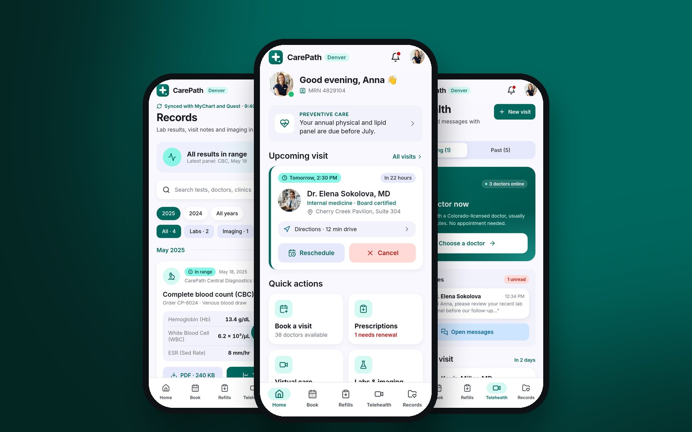
Try it yourself
All 10 screens work, with no backend. Sign in with “Use demo account”, then book a visit, order a refill, start a video call or upload a file. On a wide screen, the screen map beside the phone jumps to any screen and can simulate going offline. All people and records are fictional.
Open in new tabAt a glance
Role
Product design, UX writing and the prototype
Tools
Figma, React
Type
Mobile patient app for a medical group
A patient's care is spread across visits, pharmacies, labs, video calls and billing. Each usually lives in its own portal, and every one asks people to work it out again, often on a bad day.
One app where the next step is always obvious: what's coming up, what needs action and how to reach a person. Calm, plain language, and safe when it matters.
Key flows

The next step, front and centre
Home answers one question: what do I need to do now? The next visit comes first, with directions, reschedule and cancel. Cancelling asks for confirmation and offers Undo. Below are a preventive-care reminder and six quick actions.
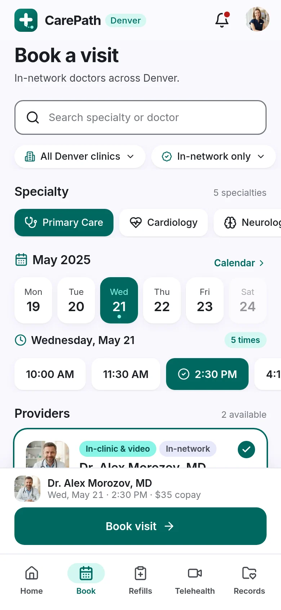
Specialty, day, time, doctor. Done.
Four choices and a confirmation. Clinic and insurance filters keep the list to in-network options, and fully booked days look booked rather than failing later. Each doctor card shows the copay before you confirm. The new visit appears on Home straight away.
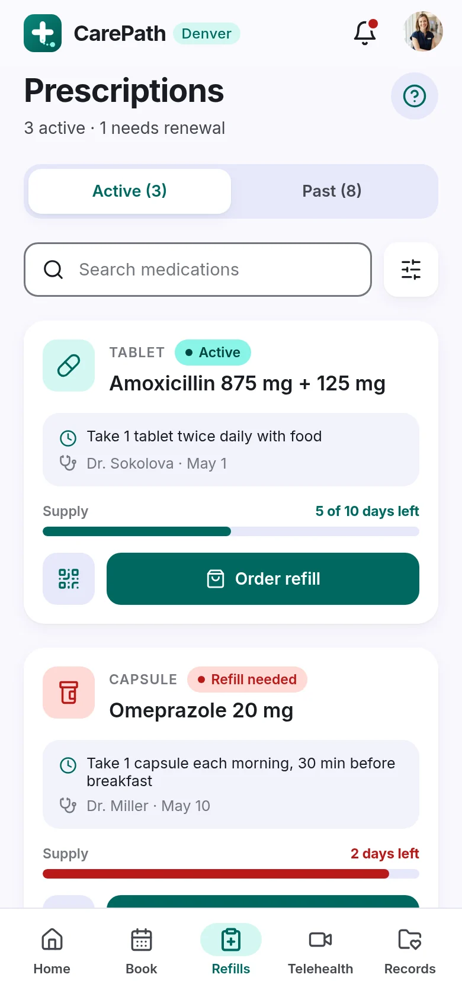
Refills before you run out
A supply bar on every medication shows how many days are left and turns red when it's time to act. Order refill offers delivery or pickup. When a prescription has run out, the same button becomes Request renewal, with a note to the doctor.
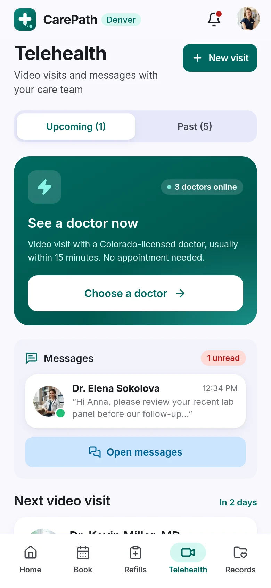
A doctor in about 15 minutes
“See a doctor now” shows how many doctors are online, then starts a video call with a timer, live captions and clear mute, camera and end controls. Scheduled visits explain when the room opens and offer a camera and sound test beforehand.
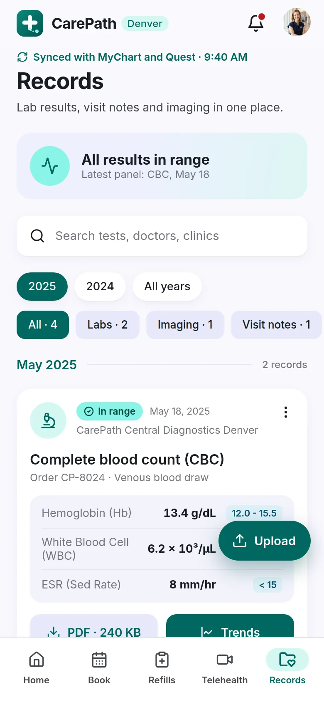
Results people can read
“All results in range” comes before any numbers. Every value sits next to its reference range, and Trends charts a marker over time. Filters by year and type show their counts, so empty filters never surprise anyone. Patients can upload their own files too.
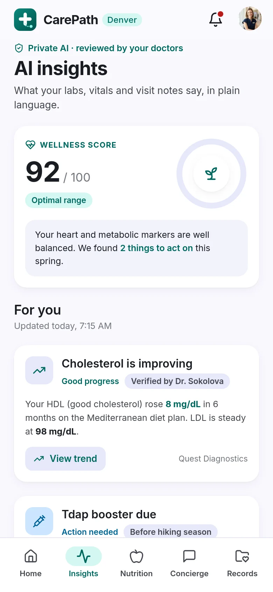
AI that knows its place
A wellness score and plain-language findings from labs, vitals and visit notes, each marked as reviewed by the patient's doctors. Findings come with one action, such as booking an overdue Tdap booster in one tap, with Undo. The assistant suggests questions so nobody faces a blank box.
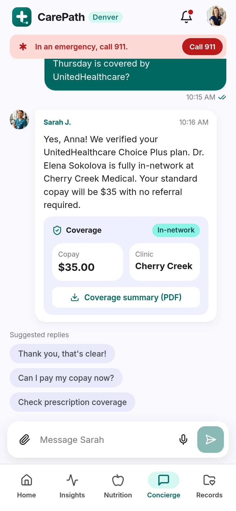
A person, with 911 one tap away
The concierge answers billing, coverage and referral questions in plain words, with suggested replies for the common ones. An emergency banner stays pinned at the top of the chat. Calling 911 asks for confirmation, so it's quick but never accidental.
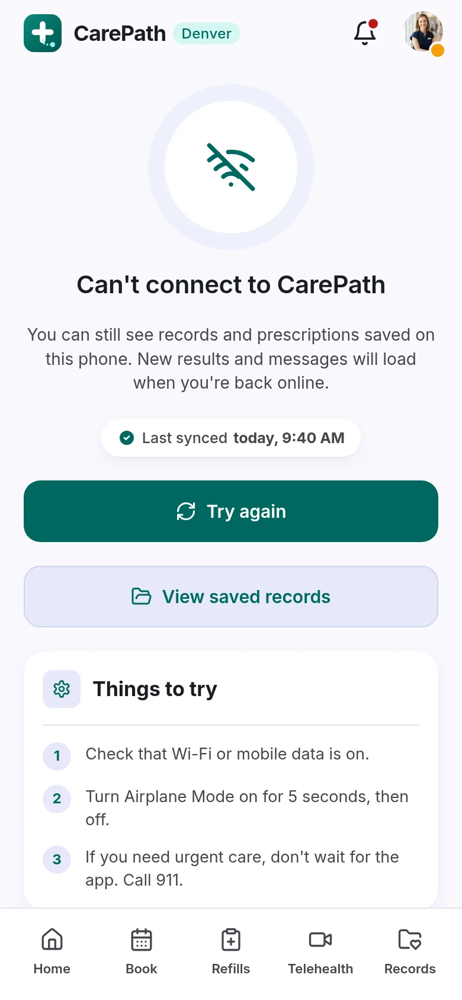
Designed for a bad connection
Clinics and basements have weak signal. Instead of an error, the app says what still works: records and prescriptions saved on the phone, when it last synced, and simple things to try. Urgent-care advice stays on screen.
More screens
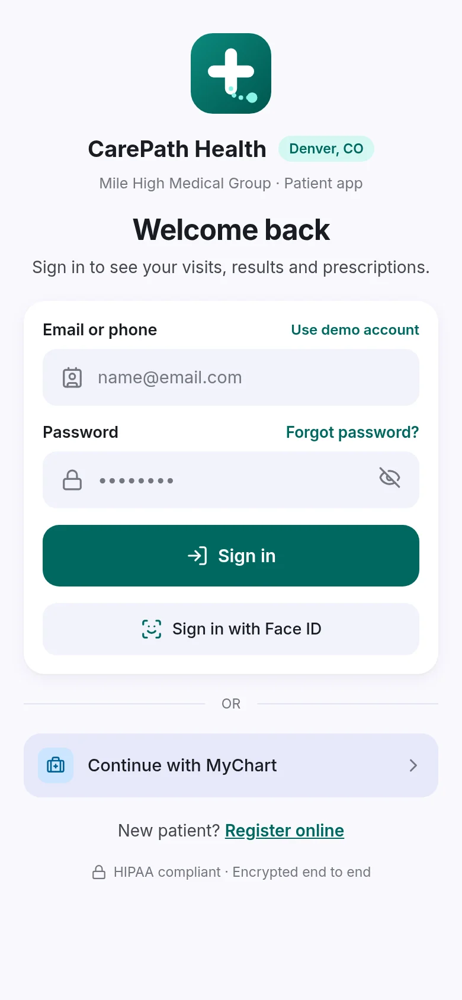
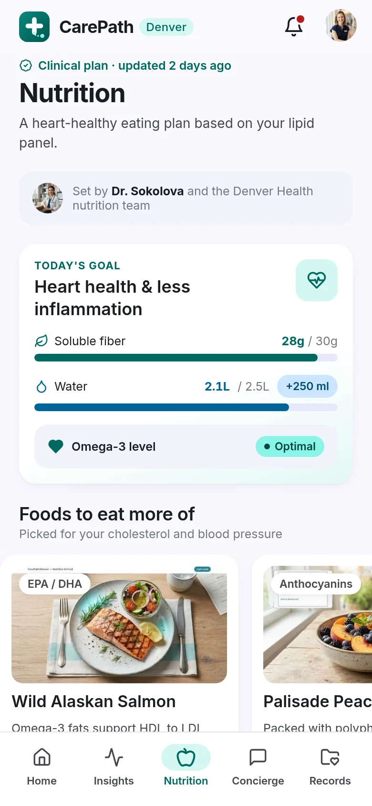
Design decisions
Two tab bars, one app
The design had two different tab bars: one for care (book, refills, telehealth, records) and one for the health hub (insights, nutrition, chat). I kept both and joined them: Home links into the hub, and the avatar menu reaches everything, so no screen is a dead end.
Clinical safety first
AI answers say who checked them. 911 is one tap away in chat and on the offline screen, with a confirmation step. Payments and calls in the demo are clearly labelled as demo, so nothing can be mistaken for the real thing.
Plain-language UX writing
Sentence case everywhere, shorter doctor titles, results and diagnoses in everyday words, and buttons that say what they do: “Order refill”, “Request renewal”, “Book visit”.
One system, not ten screens
A shared top bar, page header, card header, list rows and action tiles, with one icon size and colour. A consistency pass after the first build turned ten screens into one product.
From Figma to a working prototype
I designed all ten screens in Figma, then built them in React so every button does something real: forms validate, lists filter, a booked visit lands on Home, a logged meal moves the daily goal. Building it showed where the design needed work. That led to a second pass on consistency and copy, and a new brand mark and launch screen.
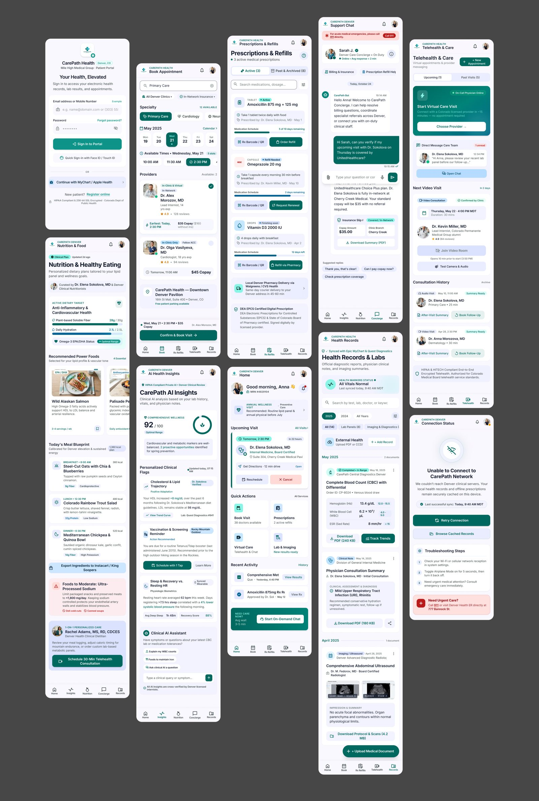
The Figma file: all ten screens. Click to enlarge.
The doctor's side
The other half of CarePath is for doctors: the schedule, patient notes and replies to the messages patients send here. It's the next part to design.